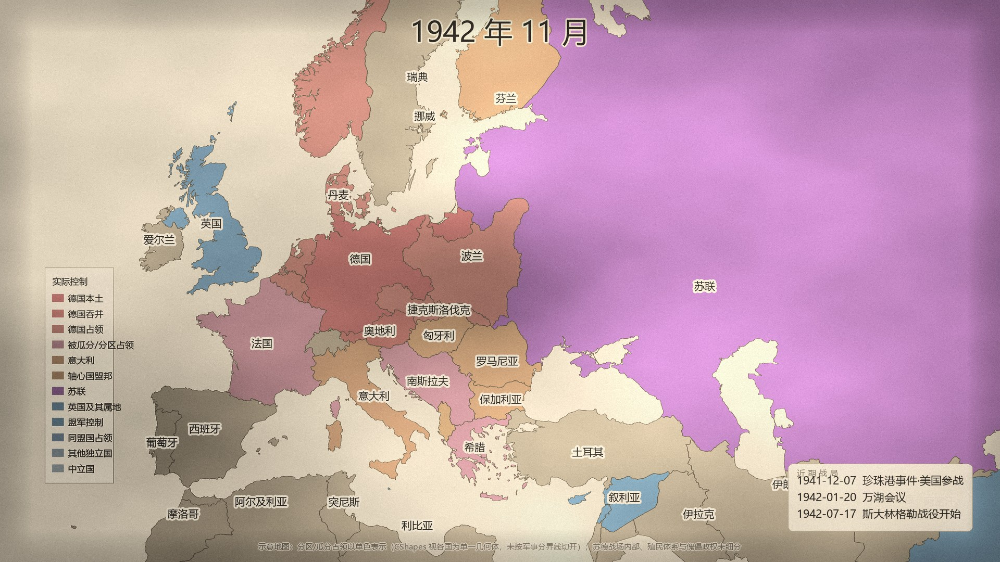
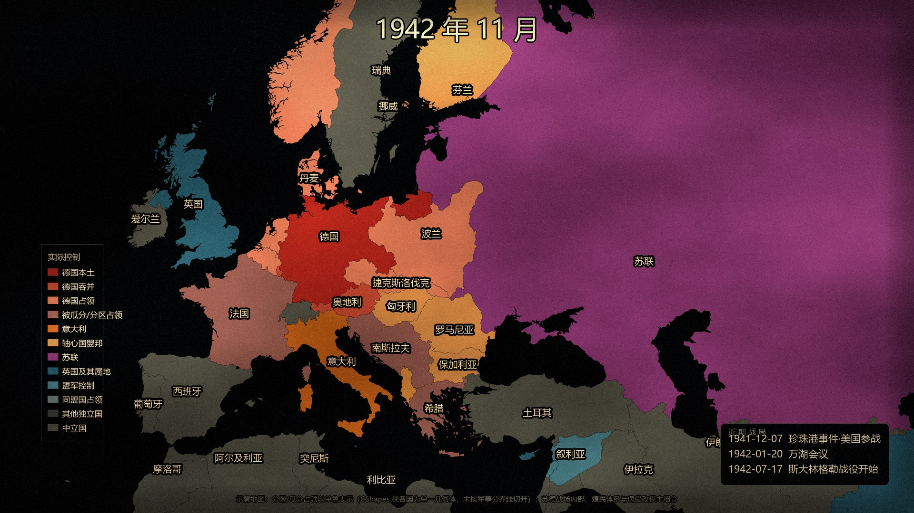
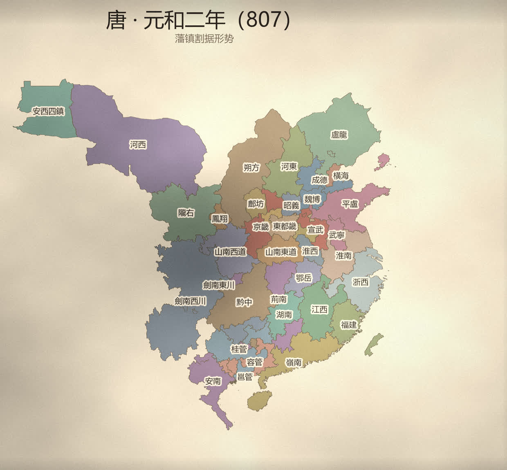
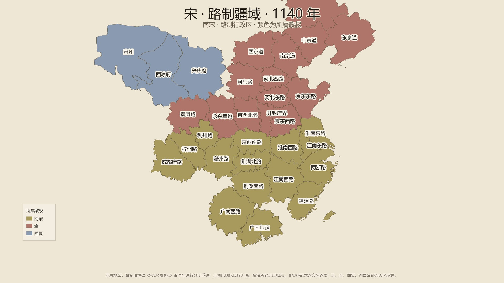
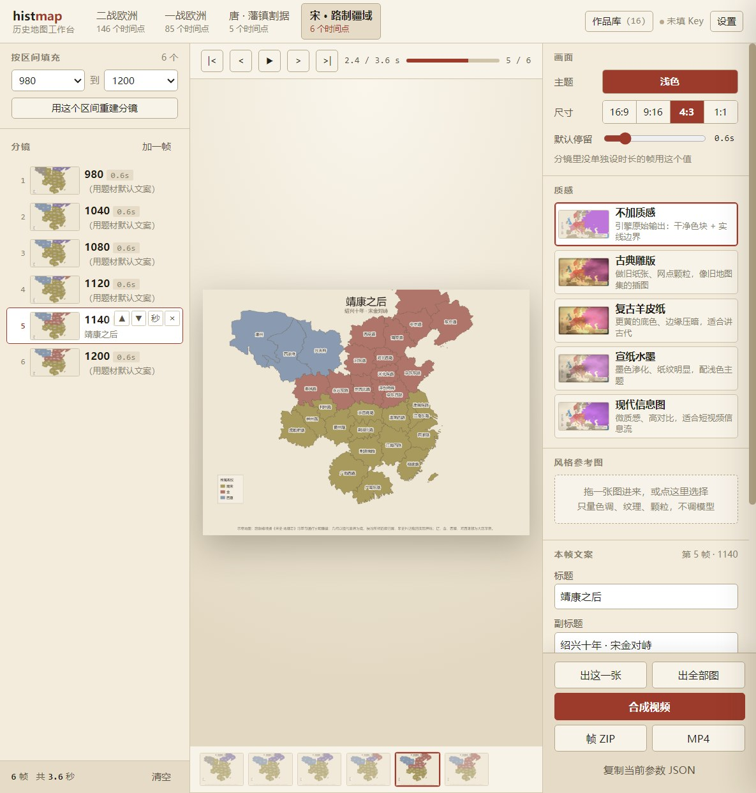
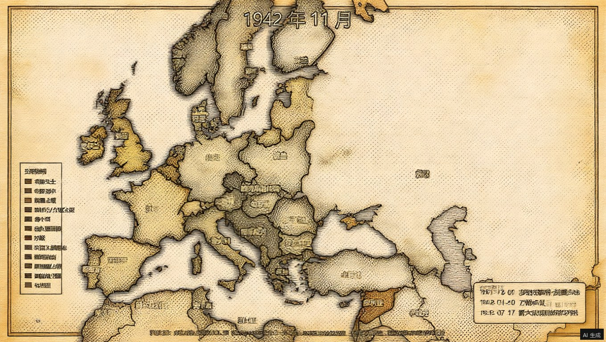

不是让 AI「画」一张地图——那会得到一张好看但读不出信息的图。 这里做的是：把史料整理成结构化数据，用代码画出来。 边界归数据、配色归样式、质感归后期，三者分离； 所以换题材不换引擎，换风格不重做数据。

二战欧洲 · 1942 年 11 月实际控制格局。 每块领土的颜色代表谁在实际上控制它，而不是法律上的主权归属—— 这个区别是关键的：只画主权边界会得出「1941 年的波兰属于同盟国」这种一眼假的结论。 图上德占区、苏联、英国及其属地、盟军控制、轴心国盟邦、被瓜分/分区占领、中立国各自可辨， 中文标注完整，底部附简化口径声明。
1939 → 1945 欧洲格局演变，131 个关键帧。 时间轴不是按月份均分，而是月度帧 ∪ 事件帧—— 「巴黎陷落」这类节点会精确停在画面上；停留时长也跟着史料走 （有事件 0.55 秒，无事件 0.12 秒），动静有节奏，不是匀速幻灯。

theme 参数。
不是把背景刷白——标注描边、图例面板、区域配色三样一起换，
否则字会糊、图例会变成黑底白字贴在宣纸上。
引擎本身不知道「唐朝」是什么，它只认 Region / Frame / Series 三个契约结构。
换题材 = 换数据适配器。下面这张图和上面那张二战图，出自同一套渲染引擎。

唐 · 元和二年（807）藩镇割据形势。 图上每一个藩镇都是从《新唐书·方镇表》的州县隶属记录重建出来的： 河北三镇（盧龍、成德、魏博）割据、淮西（蔡申光）跋扈、平盧（淄青）跨据十二州、 剑南分为东西两川、岭南五管 —— 正是宪宗元和削藩前夜的真实格局。
唐是「史料构建」里最费劲的一类（要从方镇表重建州）。宋代走同一条管线，
但换了个粒度：唐图把同属一个藩镇的州并成一块（看疆域），
宋图保留每一条路各自成面、只按所属政权上色（看行政区划）——
这个差别是题材数据里的一个字段 merge_by，不是两套代码。

宋 · 绍兴十年（1140）路制形势。 南宋十五路、金十四路（含接管的原辽五道）、西夏三府。 金直接用原宋、辽的路与道，不再另立一套「金·某府」—— 同一个政区被两个单元重复认领，是这套管线最容易出、也最难看出来的错。 图上边界取通行分期：京西南路（治襄阳）跨在绍兴和议的淮河—大散关界上，按襄阳属南宋处理。
出图之前先排一条分镜：按区间铺一批帧，然后逐帧删、上下挪动、改停留时长。 顺序就是片子的叙事，不是只能按年份从早到晚排。 每一帧还能单独改标题与副标题，或一键套用到全部帧。

这就是工作台本身，不是效果图。 左边第 5 帧被改过文案（「靖康之后」），中间画布立刻跟着变；走带显示 2.4 / 3.6 秒； 底部胶片条是已经真渲染出来的帧。 中间的播放键会照每帧真实的停留时长在浏览器里放一遍 —— 先用几秒钟确认节奏对不对，再决定要不要花几分钟合成片子。
唐代没有任何许可证干净的现成边界数据（唯一严谨的 CHGIS 明令禁止商用与再分发）， 几何必须从史料重建：
《新唐书·方镇表》原文（维基文库，公有领域） │ 解析：藩镇 ← [州] 的逐年隶属 （42 列 / 566 个有效变化记录） ▼ 唐州治所坐标表 329 条 ← 按《地理志》州县沿革重建 │ 逐点几何校验：必须落在真实县境内 （329/329 通过） ▼ 现代县多边形 3099 个（geoBoundaries CHN + VNM，可商用许可） │ 每个县归到最近的当年存在的州治 → 州的面 ▼ 按藩镇-州隶属合并 （2278 个县 → 263 个州 → 37 个藩镇） ▼ 渲染 + 后期质感
为什么用「县归属」而不是 Voronoi 直接生成州：Voronoi 出来是直线多边形、 合成感极强、也不会沿海岸线切断；用真实县界拼出来的面形状自然、天然贴海岸线， 而且县的数量（3099）远大于州（约 260），粒度足够。
最初想用图像生成模型直接出图。它确实做出了非常漂亮的羊皮纸雕版质感—— 但它把数据一起美化掉了。

| 指标 | 代码质感 | 图像模型 |
|---|---|---|
| 输出尺寸 | 1920×1080 保持 | 1360×768 被改 |
| 结构相似度 NCC | 0.9548 | −0.0745 |
| 控制区颜色保真 | 98.95% | 33.57% |
| 保真度闸门 | 通过 | 未通过 |
| 单帧成本 | 0（本地约 1s） | 37s + 计费 |
| 帧间一致性 | 确定性，完全一致 | 每帧漂移 |
根因：模型不知道哪些像素是「信息」、哪些是「材质」。 所以我们把材质层交给代码（fBm 纸纹 + 乘性调色 + 暗角 + 做旧边 + 颗粒）， 并对高亮度像素（文字描边）减弱纹理。乘性调色是关键：加性混色会把 红/紫/蓝拉平成一种颜色——这正是模型犯的错。
Region / Frame / Series 三个结构，Python 与浏览器两端共用。
渲染器永远不知道「唐朝」是什么，它只认契约。style 就是另一种观感；投影已做到两端逐位一致（19/19 点，偏差 2.27e-13）。
很多「历史地图」数据集用合成占位几何——一个 33 顶点的圆饼冒充德国。
我们用形态变异系数 + 顶点数 + 环数三重判据识别它。实测某数据源 1941 年
81 个实体里只有 16 个是真实边界（真实率 19.8%），
而它自带的 confidence_score 给一个 15 顶点的日本打了 0.9 分——
自带置信度字段不能用来判断几何质量。
任何对成图做后处理的环节都必须先过：尺寸一致 + 结构相似度 NCC ≥ 0.90 + 色块保真 ≥ 80%。模型最常见的失败不是不好看，而是 偷偷重画了文字或边界——人眼扫一遍看不出来，但观众会。
闸门自检（证明它不是摆设）： 同一张图对比自己 → NCC 1.000 通过 拿 1939 的图冒充 1941 → NCC 0.841 正确判失败 代码质感版 → NCC 0.955 通过 模型风格化版 → NCC −0.075 正确判失败
Region.rings 是拍平的环列表，不支持真正的洞
（如南非内的莱索托）。